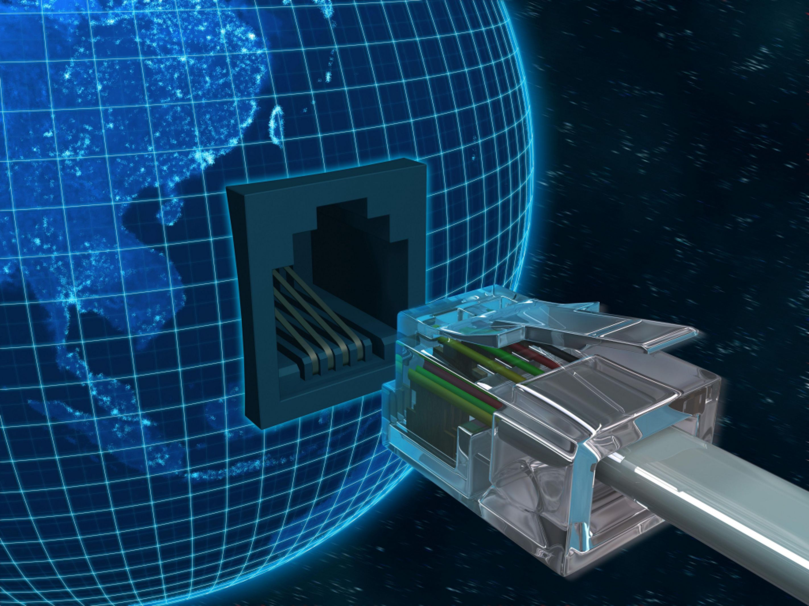

Cursos

Informática
Campo de Trabalho: O Técnico em Informática atua em qualquer área que seja informatizada na indústria, no comércio e em empresas de manutenção e desenvolvimento de software.
Funções: Desempenha atividades relacionadas à área de Informática, elabora programas utilizando linguagens básicas e avançadas, treina os usuários de programas e participa de pesquisas relativas à inovação na área.
Material Didático: Na área técnica, o Sistema Fortec de Ensino tem material próprio, moderno e atualizado; totalmente apostilado, elaborado especialmente para atender a construção do conhecimento técnico do curso.
Módulos do curso:
1º MÓDULO: Word, Excel, Power Point, Access, Corel Draw, HTML, Flash CS, DOS, Windows, Linux, XML, Java, Pascal, Lógica, Fundamentos de Informática.
2º MÓDULO: Hardware, Redes de Computadores I, VBNET, Auditoria de Sistemas e Suporte ao Usuário e Linguagem C ++
3º MÓDULO: Administração e Gerenciamento de Projetos, Redes de Computadores II, Análise de Sistemas, XML, ASP, Java Script e Delphi.